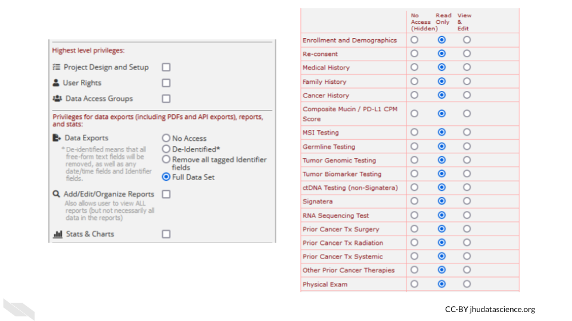

Chapter 14 Health care data sharing tools
In this section we will cover the following learning objectives:

14.0.1 REDCap (Research Electronic Data Capture)
REDCap is a very widely used browser-based software application for managing surveys and databases. It is very often used for clinical data. In fact, it is so widely used that there is a conference dedicated to it.
REDCap allows for multi-institutional work, as well as compliance with HIPAA, 21 CFR Part 11 for data for the FDA, FISMA for government data, HIPAA, and GDPR for data for the European Union. It was developed by a team at Vanderbilt University in 2004. It is not open-source, however it is free to use for non-commercial research (redcap_2022?).
You can find out more about how to use REDCap at the REDCap website which includes instructional videos and other resources.
There are several things to keep in mind when using REDCap from an ethical standpoint.
- Roles
REDCap allows for various roles to be established for users on a project. Thus access to certain data and tasks can be restricted to certain individuals. As described previously, it is a good idea to restrict access to the smallest number of individuals necessary.
You can modify these roles using the User Rights menu.

This will first show you who has what role on the project and their rights. You can click on an individual role to modify it.

These roles should be verified by your institutional review board (IRB) before beginning a study. Changes to roles should also be reviewed by your IRB.
- Reports
Reports that are exported can be customized to only show data that should be shared with the individual that you plan to share with. Please see the section on de-identification to better understand what data you might want to be restrictive about sharing. Again, the way you intend to share your data should be reviewed by your IRB before you begin your study.
For example, you might remove the dates from the following report:

- Auditing
REDCap keeps track of all data modifications, as well as data exports or report generations, in addition to keeping track of who performs those actions. This can be helpful for checking what has happened and when, in case anything happens that is unexpected or unintended. This is also great from a reproducibility or transparency standpoint - you have a record of any modifications to the data. This information can be obtained from the logging menu.
- Keep instruments short
If your instruments are too long, this can result in accidentally sharing data that you don’t intend to, simply because you have more data to sift through. This also makes it easier to generate reports only on specific data that you would like to share.
- Data can be locked
You can protect your data from accidentally being modified by locking specific data. Furthermore, at later stages of the project the data can no longer be modified.

Keep in mind that your institution likely has their own guidelines for how to use REDCap should you decide to use it. Also remember to verify what you plan to do with your institutional review board (IRB) before you begin the study.
In summary, if you are using protected health information data, REDCap can be a very useful tool. There are many aspects like auditing and locking of data to ensure that the integrity of the data is maintained. We hope that this course has helped you identify new tools and methods to help you keep your research data organized and safe and to enable you to share it with the rest of the research community in a way that is usable to others.